Learn SSS
Lesson Proper and Visual Representation
SSS Postulate
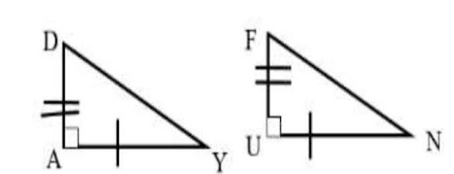
📖 Definition
The Side-Side-Side (SSS) Similarity Theorem states that if the three pairs of corresponding sides of two triangles are proportional, then the two triangles are similar.
📝 Important Notes
AY/UN = DA/FU = DY/FN Therefore SSS Similarity Theorem we can conclude that △DAY and △FUN are similar.
SSS Step-by-Step Example
Problem: Given that m∠AB = 2 and m∠AC = 4 m∠BC = 3, m∠XY = 4, and m∠XZ = 8 m∠YZ = 6. Determine if the triangles are similar using SSS Similarity Theorem.
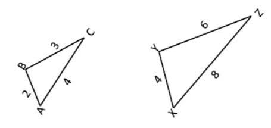
List down the side lengths in order
(From shortest to longest) m∠AB = 2 m∠BC = 3 m∠AC = 4 m∠XY = 4 m∠YZ = 6
Match the corresponding sides
Match the shortest side to shortest side Match the medium side to medium side Match the longest side to longest side AB/XY = BC/YZ = AC/XZ or 2/4 = 3/6 = 4/8
Simplify each fraction if the fraction can be simplified
1/2 = 1/2 = 1/2
Compare if three simplified fractions have the same value
1/2 = 1/2 = 1/2
Conclude if two triangles are similar
Using SSS Similarity Theorem we can now conclude that two triangles are similar, since it satisfies the requirement that three pairs of corresponding sides of two triangles are proportional, then the two triangles are similar.
SSS Practice Arena
Complete the practice questions.
Question: In △ABC, m∠AB = 5, m∠BC= 7, and m∠AC = 9 . In △DEF, m∠DE = 18, m∠EF = 9, and m∠DF = 14.
You can now enter the SSS Application.
SSS Quest Challenge
Use what you learned to solve the final SSS challenge.
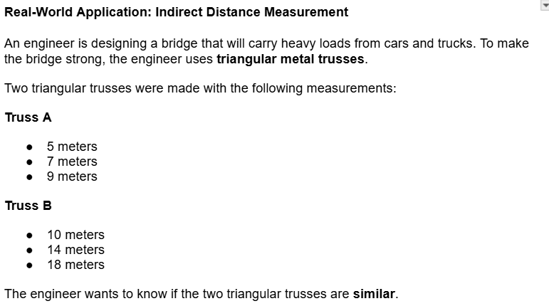
SSS Final Challenge
Question
Using the SSS Similarity Theorem, determine whether Truss A and Truss B are similar.
Show the three ratios of the corresponding sides:
5/10 = ____
7/14 = ____
9/18 = ____
Then answer:
Are the two triangular trusses similar?
A. Yes, they are similar.
B. No, they are not similar.
SSS COMPLETE!
You completed Part 1.
 +20 XP
+20 XP
 +20 Coins
+20 Coins
 +10 CP
+10 CP
Learn AA
Lesson Proper and Visual Representation
AA Theorem
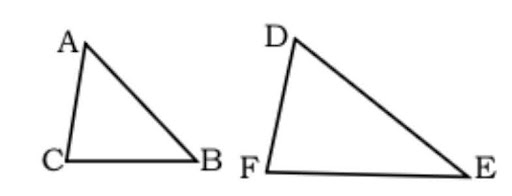
📖 Definition
The Angle-Angle S (AA) Similarity Theorem states that if two angles of one triangle are congruent to two angles of another triangle, then the two triangles are similar.
📝 Important Notes
∠A ≅ ∠D ∠B ≅ ∠E Using AA Similarity Theorem we can conclude that △ABC and △DEF are similar.
AA Step-by-Step Example
Step-by-Step Worked Example
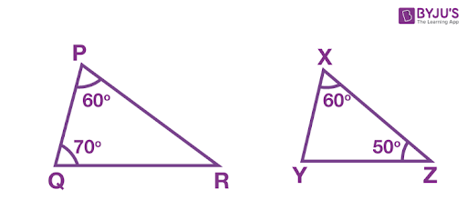
Find the missing angles using triangle sum theorem
△PQR = 180°
△XYZ = 180°
m∠P and m∠Q = 60 + 70 = 130°
To find the m∠R, subtract 180° to the sum of m∠P and m∠
m∠R = 180 - 130 = 50°
m∠X and m∠Z = 60 + 50 = 110°
To find the m∠Y, subtract 180° to the sum of m∠X and m∠Y
m∠Y = 180 - 110 = 70°
Compare the angles of two triangles
Find the first pair of equal angles Look for angles that have the same degrees.
m∠P = m∠X
Find the second pair of equal angles Look for a second set of angles that have the same degrees.
m∠Q = m∠Y
CConclude if two triangles are similar
Using AA Similarity Theorem we can now conclude that two triangles are similar, since it satisfies the requirement that one triangle are congruent to two angles of another triangle.
AA Practice Arena
Complete all three practice questions.
Question: In △ABC, m∠A = 60° and m∠B = 81°. In △DEF, m∠D = 40° and m∠E = 81°.
You can now enter the AA Application.
AA Quest Challenge
Use what you learned to solve the final AA challenge.
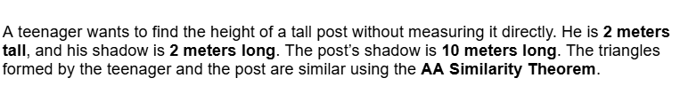
⚔️ AA Final Challenge
Question: Using AA Similarity Theorem, what is the height of the post?
A. 5 meters
B. 10 meters
C. 12 meters
D. 20 meters
AA COMPLETE!
You completed Part 2.
Learn SAS
Lesson Proper and Visual Representation.
SAS Postulate
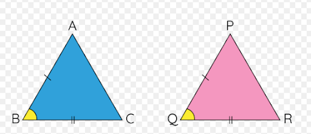
📖 Definition
The SAS Similarity Theorem states that if two sides of one triangle are proportional to two corresponding sides of another triangle, and their included angles (the angle between those two sides) are congruent, then the two triangles are similar.
📝 Important Notes
Included Angles: ∠ B ≅∠ Q
Proportional Sides:
ABPQ = BCQR
Conclusion: Triangle ABC ⩭ Triangle PQR
SAS Step-by-Step Example
Step-by-step Example SAS
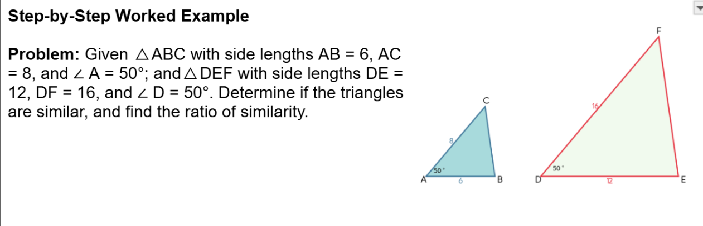
Check Included Angles
∠ A = 50° and ∠ D = 50° → ∠ A ≅ ∠ D
Calculate Ratios of Corresponding Sides
AB/DE = 6/12 = 1/2
AC/DF = 8/16=1/2
Compare Ratios
Since the sides forming the congruent included angle are proportional.
Conclusion
By the SAS Similarity Theorem, ⃤ ABC 〜 ⃤ DEF with a scale factor of 1:2.
SAS Practice Arena
Complete all three practice questions.
Question: In ⃤ PQR, PQ = 15, PR = 20, and ∠ P = 65°. In ⃤ STU, ST = 6, SU = 8, and ∠ S = 65°.
You can now enter the SAS Application.
SAS Quest Challenge
Use what you learned to solve the final SAS challenge.
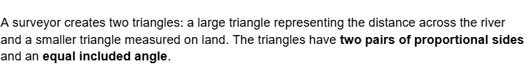
⚔️ SAS Final Challenge
Question:
A surveyor measures a small triangle with sides AB = 12 m and AC = 15 m. A larger similar triangle across the river has corresponding side DE = 36 m. If the corresponding side to AC is x, what is the length of \(x\)?
A. 30 m
B. 36 m
C. 45 m
D. 48 m
SAS COMPLETE!
You completed Part 3.
Learn RTS
Put your RTS lesson introduction here.
Right Triangle Similarity Theorem
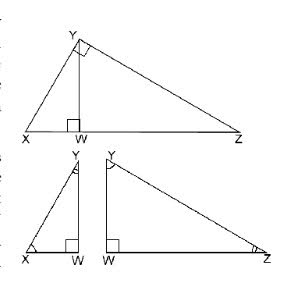
📖 Definition
The Right Triangle Similarity Theorem states that if the altitude is drawn from the right angle of a right triangle to its hypotenuse, then the two triangles formed are similar to each other and to the original right triangle.
📝 Important Notes
One way to prove this theorem is by illustrating the right triangles separately and showing that the corresponding angles are congruent. So, let △XYZ be a right triangle where ∠XYZ is the right angle, and YW is an altitude to the hypotenuse XZ.
Since ∠XYZ is a right angle and YW is an altitude, we can say that ∠X and ∠Z are complementary. Now, splitting the right triangle into two, we form new angles ∠XYW and ∠WYZ, which are complements of ∠X and ∠Z, respectively.
With these conditions, we can say that:
∠X ≅ ∠WYZ and ∠Z ≅ ∠XYW
Also, ∠XWY ≅ ∠YWZ because they are right angles. Hence, all corresponding angles are congruent.
Therefore,
△XYZ∼△XYW∼△WYZ
RTS Step-by-Step Example
Put your RTS example introduction here.
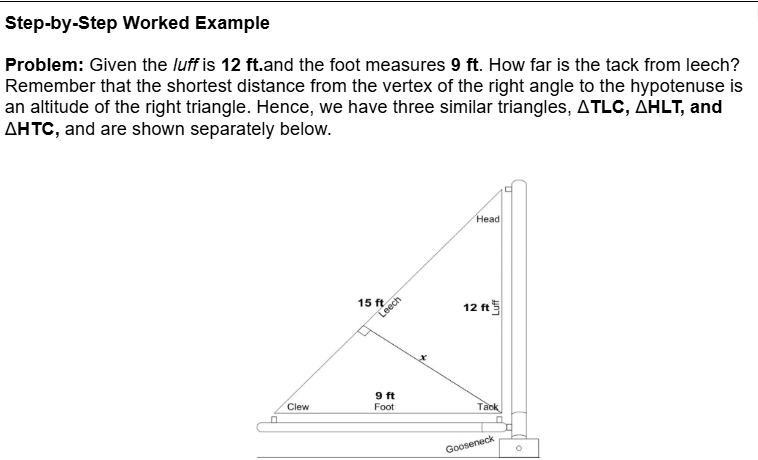
Substitute terms of the proportion by the lengths of the sides.
x/9=12/15
Solve for the value of x
x=108/15
divide
x=7.2 ft
conclusion
Therefore, the distance from the track to the leech is 7.2 ft.
RTS Practice Arena
Complete all three practice questions.
Question: In ⃤ ABC, ∠A = 15°, AB = 8 cm, and BC is the side opposite the 30° angle.
You can now enter the RTS Application.
RTS Quest Challenge
Use what you learned to solve the final RTS challenge.
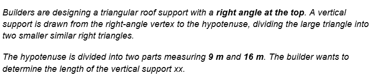
⚔️ RTS Final Challenge
Question: Using the Right Triangle Similarity Theorem, what is the length of the vertical support?
x^2=(9)(16)
A. 10 m
B. 12 m
C. 15 m
D. 25 m
RTS COMPLETE!
You completed Part 4.
Learn SRT
Lesson Proper and Visual Representation
Special Right Triangle Theorem
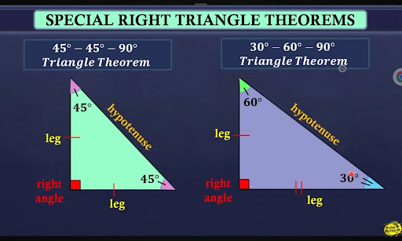
📖 Definition
The Special Right Triangle Theorem is a geometric rule stating that right triangles with specific angle measures (45°-45°-90° or 30°-60°-90°) have fixed, predictable side-length ratios. These special triangles are categorized into two distinct geometric groups: Isosceles Right Triangles and Scalene Right Triangles.
📝 Important Notes
1. The Isosceles Right Triangle (45°-45°-90°)
An isosceles triangle has two equal sides and two equal angles. When it contains a 90° angle, it forms a 45°-45°-90°triangle.
The Geometric Rule: The two legs are completely identical in length. The hypotenuse is always the leg length multiplied by √2.
The Fixed Ratio:
Formula:
If you have a Leg, multiply by √2 to get the Hypotenuse:Hypotenuse= Leg x √2
If you have the Hypotenuse, divide by √2 to get a Leg
2. The Scalene Right Triangle (30°-60°-90°)
A scalene triangle has three entirely different side lengths and three different angles. The most famous scalene right triangle is the (30°-60°-90°) triangle, which is exactly half of an equilateral triangle.
The Geometric Rule: The sides scale predictably based on the short leg (the side opposite the 30° angle). The hypotenuse is always double the short leg, and the long leg is the short leg multiplied by √3.
SRT Step-by-Step Example
Step-by-Step Worked Example
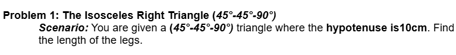
Recall the Ratio Blueprint
The ratio for an isosceles right triangle is Leg: Leg: Hypotenuse= x : x : x√2.
Set up your equation
We know the hypotenuse is 10, so set x√2.equal to 10:
x√2=10
Isolate the leg (x)
Divide both sides by √2:
Rationalize the denominator
In math, we don't leave square roots on the bottom of a fraction. Multiply the top and bottom by √2
Simplify
Divide 10 by 2:x = 5√2
SRT Practice Arena
Complete all three practice questions.
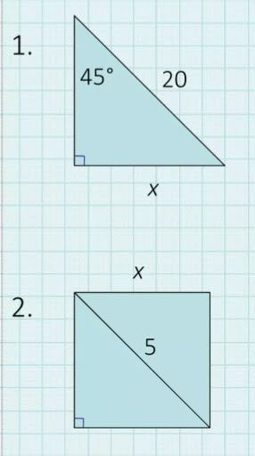
You can now enter the SRT Application.
SRT Quest Challenge
Use what you learned to solve the final SRT challenge.
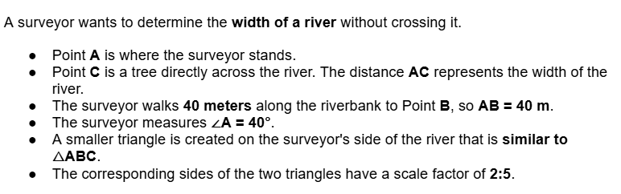
⚔️ SRT Final Challenge
Question: If the corresponding side to AB = 40 m in the smaller triangle is 16 m, what is the width of the river AC?
A. 80 m
B. 100 m
C. 125 m
D. 200 m
SRT COMPLETE!
You completed Part 5.
CONGRATULATIONS!
You completed all five Triangle Quest parts: SSS, AA, SAS, RTS, and SRT.